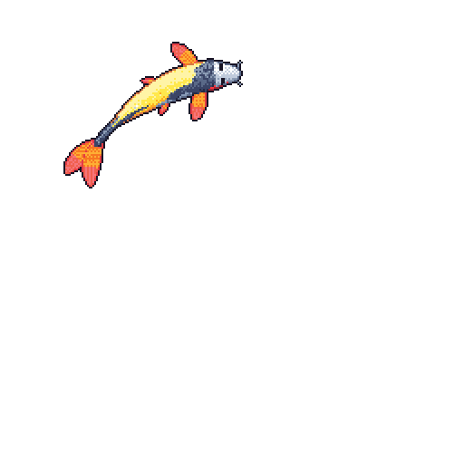

🐟 Loganth's GitHub Koi
Drag your koi around the water, and explore real public GitHub activity below.

DRAG THE FISH • EXPLORE BELOWCustomization changes the display only; it does not regenerate or recolor the original GIF pixels.
Activity overview
Public events in the last 30 days · not GitHub contribution totalsGitHub contribution calendar
Scroll down for previous years · swipe sideways on narrow screensActual public contribution counts and intensity levels from your GitHub profile (via a cached third-party contribution API). This is separate from the public-event metrics above.
Event type distribution
Pushes, pull requests, issues, reviews and other public actions.
Recent public activity
Repository languages
Distribution by primary language of your public, non-fork repositories. Not the koi's exact pixel-color proportions.
Productivity & workflow insights
Public event timestamps · displayed in your browser's timezoneThese charts count public GitHub events, not hours spent coding or individual commits. Limited to the latest 100 public events returned by the API.
Activity by day of week
Activity by time of day
Featured projects
Curated selections · live repository metadataFetching project details…
Tech stack & ecosystem
Curated skill categories, not automatically verified proficiencyLanguages
Frameworks & AI
Data & retrieval
DevOps & security
Technical writing
Optional DEV Community integrationNo publication username configured yet. Add your DEV Community username to the DEVTO_USERNAME setting in the HTML to load published articles automatically.
Visitor interaction hub
GitHub Discussions, with moderationComments are optional. Configure Giscus using your repository and discussion category IDs from giscus.app to enable an embedded discussion. GitHub sign-in is required to post; anonymous posting is not supported by Giscus.
Koi visuals are generated by Git Profile Koi. The activity metrics and contribution calendar are independent of the koi generator; contributions may include more than public events.